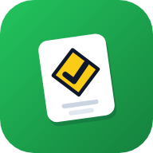

Política de Privacidade
Bora CNH
Última atualização: 16 de novembro de 2026
1. Quem somos
O Bora CNH é um aplicativo gratuito de flashcards e simulado para a prova teórica do Detran (primeira habilitação), publicado por JPFG Apps. É um app independente, sem vínculo com o Detran, o Ministério dos Transportes ou o governo. Esta política explica como o aplicativo trata as suas informações.
2. Informações que NÃO coletamos
- Não pedimos nome, e-mail, telefone, CPF, documento ou qualquer cadastro. Não existe login nem conta.
- Não coletamos localização, contatos, fotos, arquivos nem agenda.
- Não usamos Firebase, ferramentas de estatística (analytics) nem relatórios de erro enviados pela internet.
- Não temos servidor próprio: nenhum dado do seu estudo é enviado para nós.
3. Informações guardadas apenas no seu celular
Para o aplicativo funcionar, ele guarda no próprio aparelho (em um banco de dados local), sem enviar para lugar nenhum:
- o progresso das cartas (o que você acertou ou errou e quando revisar de novo);
- XP, nível, sequência de dias e conquistas;
- o histórico dos simulados feitos;
- as suas preferências, como o horário do lembrete diário.
Essas informações são apagadas quando você usa a opção “Zerar progresso” no aplicativo, quando desinstala o aplicativo ou quando limpa os dados dele nas configurações do celular.
4. Permissões do aplicativo
- Internet e estado da rede: carregar os anúncios e baixar a lista atualizada de indicações de produtos. O estudo e o simulado funcionam totalmente sem internet.
- Notificações: enviar o lembrete diário de estudo, somente se você ligar essa opção. No Android 13 ou mais novo, a permissão só é pedida quando você ativa o lembrete. O lembrete é agendado no próprio celular; não existe servidor de envio. Você pode desligar a qualquer momento.
- Executar na inicialização: reagendar o lembrete diário depois que o celular é reiniciado.
Algumas bibliotecas usadas pelo aplicativo adicionam permissões técnicas automaticamente:
- ID de publicidade (incluindo as permissões de anúncios do Android, como “Topics” e atribuição): usadas pelo Google AdMob para exibir anúncios, conforme o seu consentimento.
- Manter o aparelho ativo e serviço em primeiro plano: usadas pelo agendador de tarefas do Android (WorkManager) para entregar o lembrete no horário certo.
O aplicativo não pede acesso a câmera, microfone, localização, contatos, fotos ou arquivos.
5. Anúncios (Google AdMob)
O Bora CNH é gratuito porque mostra anúncios do Google AdMob: banner, anúncio em tela cheia ao terminar uma sessão ou simulado e, se você escolher, anúncio premiado em troca de um benefício (por exemplo, um simulado extra).
Para mostrar e medir os anúncios, o Google pode coletar e usar o identificador de publicidade do aparelho, o endereço IP e dados de interação com os anúncios (como visualizações e cliques). Esses dados são tratados pelo Google, conforme a política dele: https://policies.google.com/technologies/ads.
Antes de carregar anúncios, o aplicativo pode mostrar o formulário de consentimento do Google (UMP), onde você escolhe se aceita anúncios personalizados. Você pode rever essa escolha a qualquer momento em Perfil > Configurações > “Gerenciar consentimento de anúncios”. Também é possível redefinir ou excluir o ID de publicidade nas configurações do Android (Google > Anúncios).
6. Links de afiliado (Mercado Livre)
A seção “Indicações para sua prova” mostra produtos do Mercado Livre. Contém links de afiliado: posso receber comissão, sem custo extra para você. Os links abrem no navegador; a partir daí, valem as políticas de privacidade do Mercado Livre. O Bora CNH não recebe nenhum dado das suas compras.
Para manter a lista de indicações atualizada, o aplicativo tenta baixar um arquivo público hospedado no GitHub (affiliates.json). Como acontece ao abrir qualquer site, o GitHub recebe a requisição e o endereço IP do aparelho. Nenhum dado pessoal ou de estudo é enviado nesse download.
7. Crianças
O aplicativo é destinado a maiores de 18 anos que vão fazer a prova teórica do Detran. Ele não é direcionado a crianças nem a adolescentes menores de 18 anos e não coleta intencionalmente dados deles.
8. Seus direitos (LGPD)
Pela Lei Geral de Proteção de Dados (Lei 13.709/2018), você tem direito de saber quais dados são tratados, corrigi-los, pedir a exclusão e revogar consentimentos. Como o Bora CNH não guarda dados seus em servidores, não há dados sob nossa guarda para consultar ou excluir: o progresso fica no seu celular e pode ser apagado por você a qualquer momento. O consentimento de anúncios pode ser alterado no próprio aplicativo; sobre os dados tratados pelo Google, consulte a política do Google indicada acima. Em caso de dúvida, fale com a gente pelo contato abaixo.
9. Mudanças nesta política
Se o aplicativo passar a funcionar de outra forma, esta política será atualizada antes da mudança, com a nova data no topo da página.
10. Contato
Dúvidas sobre esta política: jpapps.contato@gmail.com